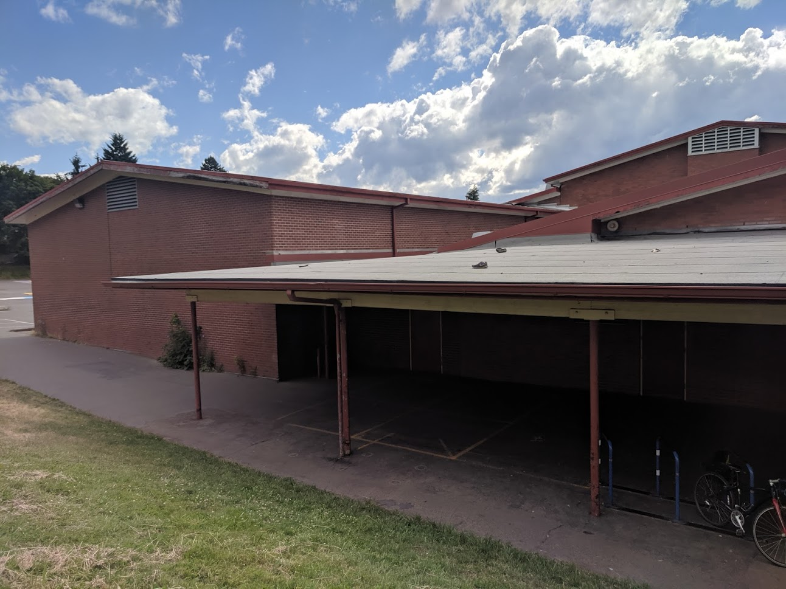

My name is Sebastian, and I was born in Portland, Oregon. I am 14 years old, and am going into 9th grade. I like biking, playing music, and hiking. I have a cat, am part of a swim team, and speak two different languages. I am afraid of amusement park rides, and large bodies of water.
In my earlier years, I went to Atkinson Elementary School, and loved soccer. I played with my friends afterschool everyday for at least an hour in the shady field. Also, we had a big rivalry with the kids who used the other field, just South of ours. Each of our groups thought that they were cooler, and that they had the better field.
In sixth grade, I went to Mt. Tabor Middle School, which seemed great at first, but soon became my worst nightmare.
I only had one nice teacher, out of six, I was made fun of all the time, and the rules were so arbotrary and hard to deal with. So, in seventh grade, I switched schools. The new schools was far better than the previous one. I wasn't made fun of, and almost everyone was my friend.